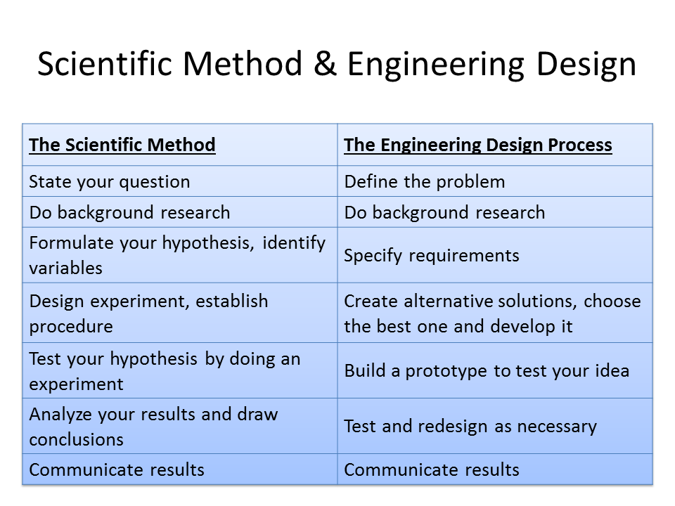

A Full-Semester Course
By Dr. Muhammad Ali Yousuf
Page updated on: May 17, 2019
Click on the buttons below to search for specific information:
You may also go back to my main page, http://pages.jh.edu/~maliyou1/
In this course students will be introduced to the process of engineering design through multiple short projects. Lectures will cover topics from Electrical design, mechanical design and structural design. Supplementary topics from physics and engineering will be added to provide enough basis to start real design work. These topics include electric and electronic circuits, microcontroller programming, 2D and 3D drawings, team building and brainstorming. In addition, students will use CAD software and other computer applications, such as word processors and spreadsheets.
There is a difference between scientific method and engineering design process
and it is important to understand it.
Purpose: The purpose in science is to discover and understand the natural world where
as in engineering it is the creation of a solution
to a specific problem.
Goal: The goal in science is to add to our collective knowledge and understadning of the natural
world. In engineering it is to create a cost effective, workable solution.
The following diagram shows the scientific method vs engineering design
process:

We'll be using the following book as our main textbook:
Week |
Topics to be covered |
PowerPoint Presentations / Links / Videos / Simulations |
| 1 | Scientific Method vs Engineering Design Process |
What are Engineering and Science? (There are multiple videos in this series) |
| 2 | Building Teams - Generating Ideas |
|
| 3 | Introduction to Electrical Circuits |
If you are new to circuits and need to understand basics like current, resistance, etc, use this online simulations at PhET Simulations at: https://phet.colorado.edu/en/simulations/category/physics/electricity-magnets-and-circuits
In particular see the following: Battery-Resistor Circuit Battery Voltage Resistance in a Wire John Travoltage Circuit Construction Kit (AC+DC) Announce Project 1 |
| 4 | Introduction to Arduino - Part 1 | Tutorial 01 for Arduino: Getting Acquainted with Arduino There are at
least 15 videos in this series. All very useful.
https://www.youtube.com/watch?v=fCxzA9_kg6s&feature=youtu.be Arduino Video Tutorial 01: Get to know your Tools with Arduino CEO Massimo Banzi There are at least 10 videos in this series. All very useful. Arduino Video Tutorial 01: Get to know your Tools with Arduino CEO Massimo Banzi | RS Components |
| 5 | Basic Engineering Drawings (2D and 3D), color, texture, etc |
Introduction To Engineering Drawing How to Draw with One Point Perspective |
| 6 | Technical Drawing using Isometric Grid Paper | |
| 7 | CAD Designing Software | Introduction to Open SCAD, http://www.openscad.org/documentation.html
Open SCAD Tutorial #1 Also see OpenSCAD Tutorials, http://www.makerbot.com/tutorials/openscad-tutorials/ |
| 8 | Structural Systems (Stress, Strain, Bridges, etc) | Ch 11 - Designing Structural Systems What is Structural Engineering? Student presentations on Project 1 and Final Feedback Start of Project 2 |
| 9 | Simple Mechanical Systems | Ch 12 - Designing Mechanical Systems Supplementary topic: Mechanical Actuation Systems.ppt |
| 10 | The Science Behind Electrical Systems | Ch 13 - Designing Electrical Systems Supplementary topic: Electrical Actuation Systems.ppt |
| 11 | Circuit Desinging Software | Fritzing, http://fritzing.org/download/
123D Circuits, http://123d.circuits.io/ |
| 12 | Arduino - Part 2
End of Project 2 |
Students may choose a new project or continue building this one to
next phase (plan to be approved by teacher)
Arduino Video Tutorial 02: Spaceship Interface | RS Components |
| 13 | Arduino - Part 3 |
Arduino Video Tutorial 05: Keyboard | RS Components Arduino Video Tutorial 06: Motorized Pinwheel | RS Components Arduino Video Tutorial 07- Crystal Ball (Magic 8-Ball) | RS Components |
| 14 | Ergonomics | |
| 15 | Arduino - Part 4 |
Arduino Video Tutorial 08: Touchy-Feely Lamp | RS Components Arduino Video Tutorial 09: Tweak the Arduino Logo | RS Components Arduino Video Tutorial 10: Twitter-controlled Mood Lamp | RS Components |
| 16 | End of Final Project 2 |
| Ch 06 - Reverse Engineering |
| Ch 07 - Investigation and Research for Design and Development |
| Ch 09 - Testing and Evaluating |
| Ch 10 - Manufacturing |
| Ch 14 - Designing Pneumatic Systems |
| Ch 16 - Math and Science Applications |
| Ch 17 - Design Styles |
| Ch 18 - Graphics and Presentation |
We have a large collection of supplies in the lab which can be issued to you at the beginning of the semester. However, if you want to buy them, here is a recommended list:
Arduino:
PICAXE:
PIC Microcontroller:
BASIC Stamp:
Ada Fruit:
Raspberry Pi:
Engines and Engine Kits:
We are thankful to many of our readers for taking interest in this website and suggesting even more interesting links and ideas. Here are just a few valuable contributions. We'll be adding more soon. Each subsection contains the name of the person/orgaization making the contribution.
Custom Control Sensor's Glossary of Terms - Contributed by Rosie McShane
This resource defines more than 50 terms related to pressure, temperature and flow sensors. Some of the defined terms include: dual seal, field set, atmospheric pressure, pressure gage, temperature lag and more. The glossary also lists national organizations and standards related to electric and hydraulic mechanics. The link is: https://www.ccsdualsnap.com/tools-resources/glossary/.
Every project must be documented. Writing engineering reports is an art which you learn through practice and by reading other reports. Here is a PowerPoint presentation on the subject, Writing Engineering Reports
You must also learn how to give proper references to a book, an online magazine or a newspaper, etc. The Imperial College of London has a good page on how to write referencs, http://www3.imperial.ac.uk/library/subjectsandsupport/referencemanagement/vancouver/references